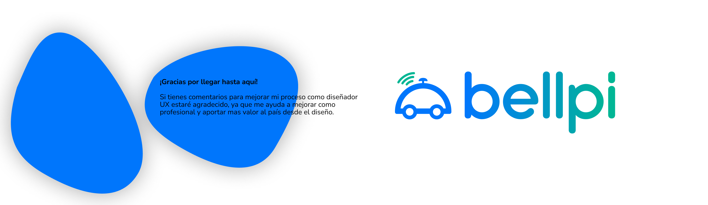
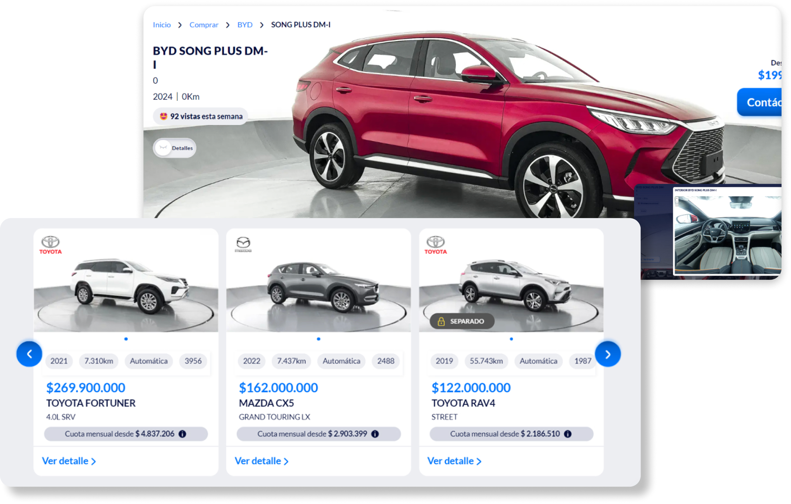
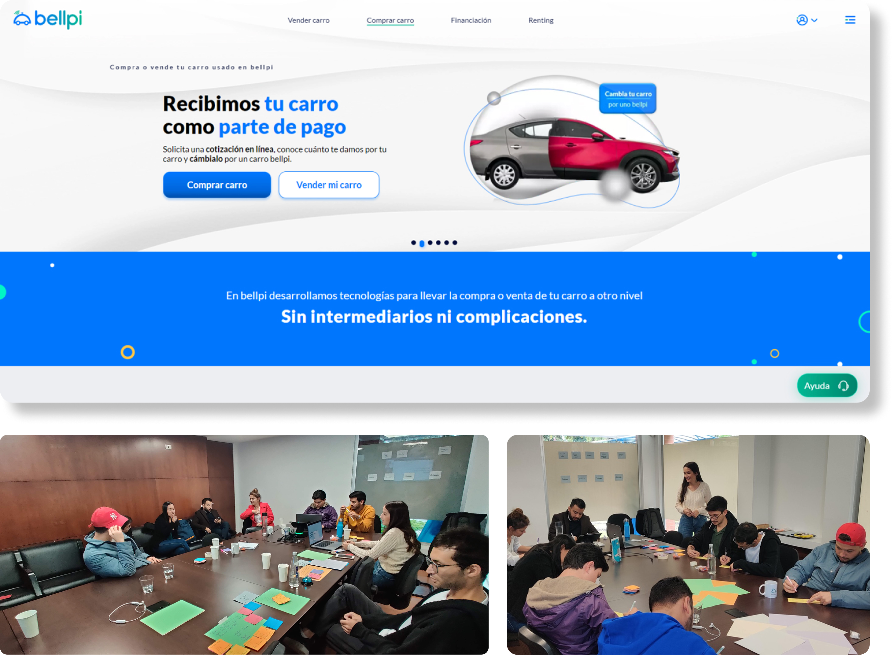
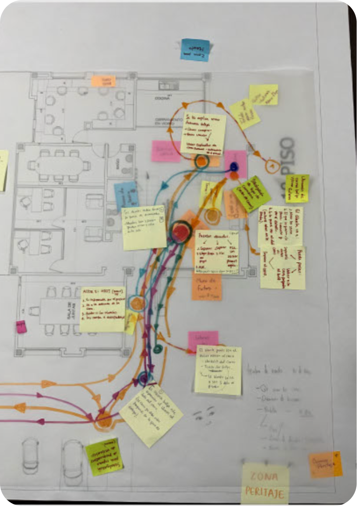
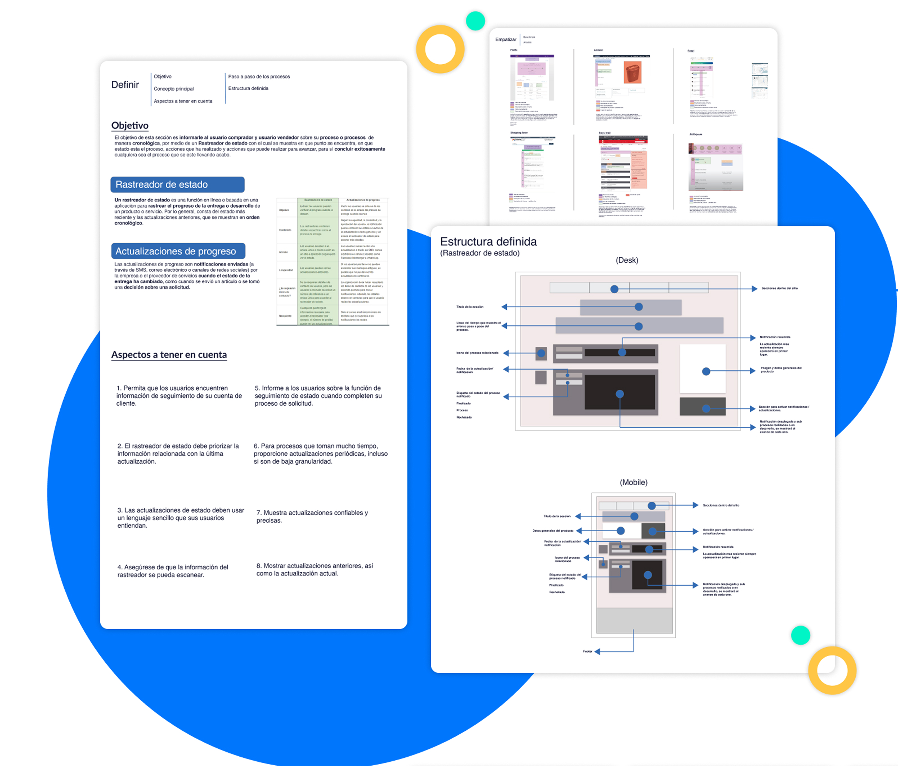
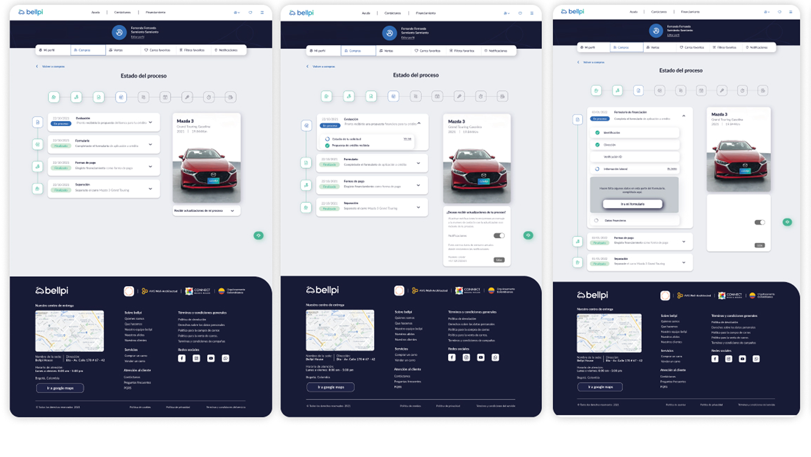

Bellpi, une plateforme e-commerce innovante de vente et achat de véhicules d’occasion en Colombie, visant à transformer une expérience traditionnellement complexe en un parcours numérique 100 % centré utilisateur. En tant que UX & Service Designer, j’ai contribué au lancement de la version 1 de la plateforme et à ses itérations successives, en m’assurant que chaque étape du produit réponde aux besoins réels des utilisateurs tout en soutenant les objectifs business.
-
Concevoir et optimiser des parcours utilisateur de bout
en bout pour les acheteurs et les vendeurs.
-
Effectuer des recherches sur les utilisateurs et
traduire les résultats en informations exploitables.
-
Collaborer avec des équipes interfonctionnelles pour
aligner les décisions de conception sur les objectifs
commerciaux et les aspects techniques.
- Créer des wireframes, des prototypes et des plans de service pour visualiser et valider les solutions proposées.
Logiciel
Workshop

Lancement de produit
Cette approche structurée a conduit à une deuxième phase centrée sur l'empathie des utilisateurs , dans laquelle nous avons évalué de manière critique les parcours utilisateur conçus à la fois pour les vendeurs et les acheteurs dans la V.1 Grâce à cette évaluation, nous avions pour objectif d'identifier les points de friction, de valider les hypothèses et de découvrir des opportunités d'amélioration qui éclaireraient le développement futur des fonctionnalités et l'amélioration de l'expérience..
- Design Thinking
- Lean UX
- Scrum




Itération continue

Expérience sur site
- Zones d'attente
- Zone de points d'information
- Zones de rencontre avec les acheteurs
- Zones de snacks
- Écrans tactiles et ordinateurs pour les utilisateurs
Expérience interactive
Une attention particulière a été accordée aux modèles d'interaction, à l'évolutivité de la mise en page et aux normes d'accessibilité, garantissant que l'interface reste utilisable et attrayante quel que soit l'appareil ou l'environnement.